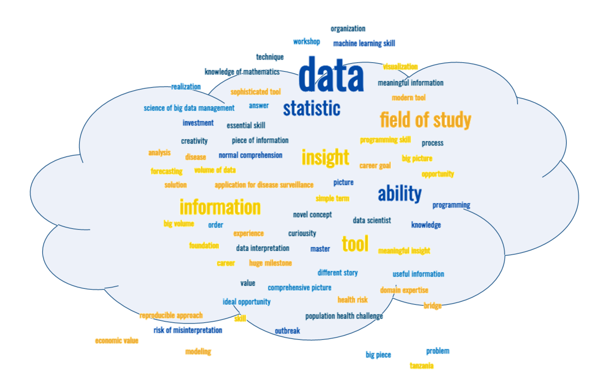
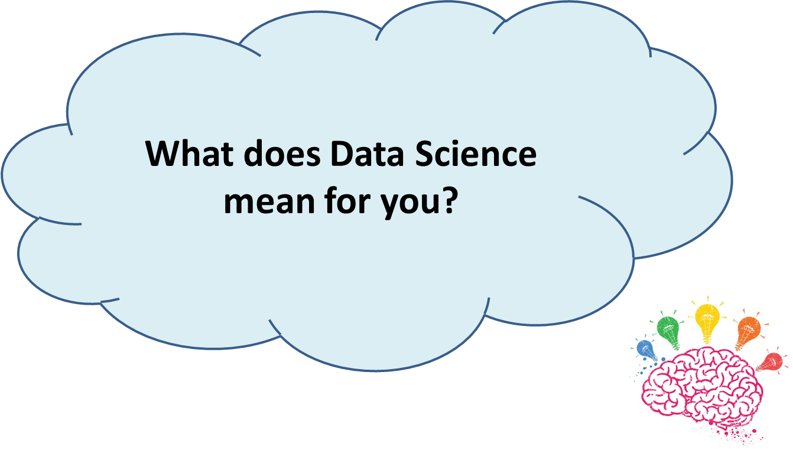
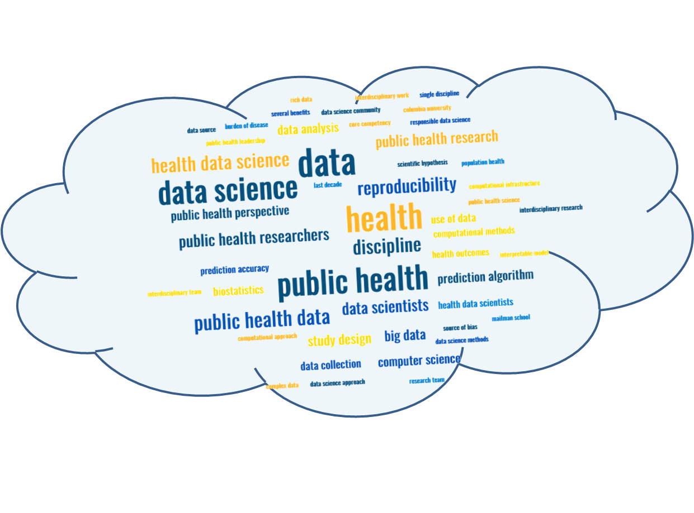
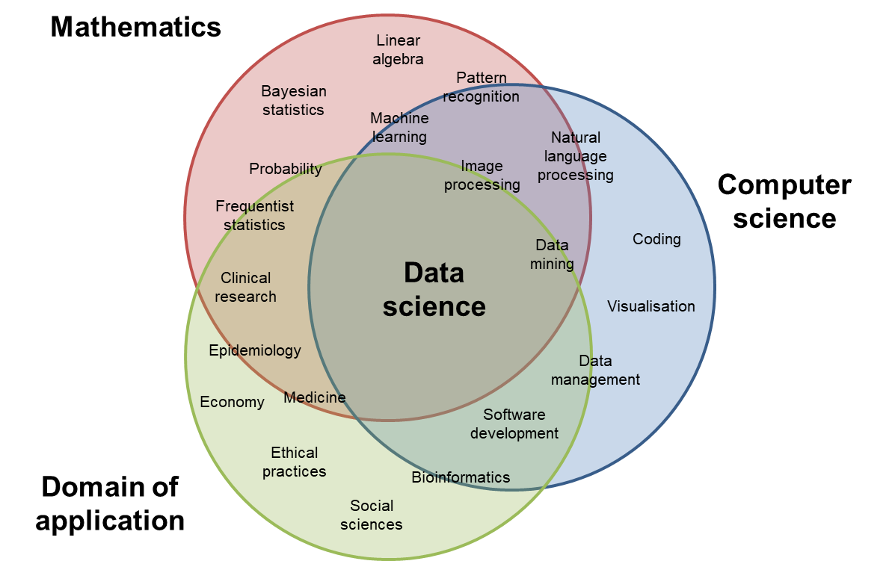
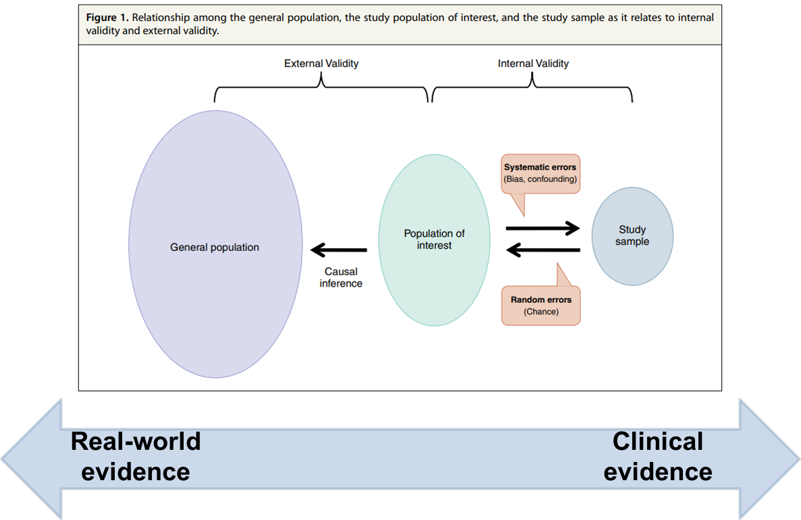

1 :books: Data Science for Public Health
1.1 What is Data Science
1.2 Data Science
üïí 3 minutes: You have probably already heard about data science as this is a main Data Science is today one of the main buzzwords, but what does Data Science mean for you?

The statistics profession faces a choice in its future research between continuing concentration on traditional topics – based largely on data analysis supported by mathematical statistics – and a broader viewpoint – based on an inclusive concept of learning from data. The latter course present severe challenges as well as exciting opportunities. The former risks seeing statistics become increasingly marginal…
(1)
John Chambers (PhD in Statistics) is the creator of the S programming language, and a core member of the R programming language project.
Data science is the science of learning from data; it studies the methods involved in the analysis and processing of data and proposes technology to improve methods in an evidence-based manner. The scope and impact of this science will expand enormously in coming decades as scientific data and data about science itself become ubiquitously available.
(2).
David Donoho is a Professor of Statistics at Stanford University.
- Growing field with computational power and data generation
- Set of collective evidence-based processes, theories, concepts, tools and technologies
- Extraction of valuable knowledge and information from data (learning from data)
Qualitative thinking currently does not receive nearly as much attention as quantitative thinking in data science.
What does Data Science mean for you?

Had you thought of any of those words? Word cloud generated by MonkeyLearn from (3)

1.2.1 Where do you see yourself on this Venn diagram

1.3 What do experts say about Data Science?
Public health data science is the study of formulating and rigorously answering questions in order to advance health and well-being using a data-centric process that emphasizes clarity, reproducibility, effective communication, and ethical practices. […] Data science implies a perspective that is shaped by […] interdisciplinary work.
(3).
1.4 A tentative definition
NIH defines data science as “the interdisciplinary field of inquiry in which quantitative and analytical approaches, processes, and systems are developed and used to extract knowledge and insights from increasingly large and/or complex sets of data”
In this book, we define data science as
Data science is an interdisciplinary collaborative field that tries to answer rigorously formulated public health questions by relying on a set of collective evidence-based processes, theories, concepts, tools and technologies that enable the extraction of valuable knowledge and information from data to generate actionable insights that effectively communicated to decision-makers can advance health and well-being.
- Interdisciplinary collaborative field
- Rigorous public health question formulation
- Set of collective evidence-based processes, theories, concepts, tools and technologies
- Extraction of valuable knowledge and information from data
- Generation of actionable insights
- Effective communication to decision-makers
1.5 Uncertainty
There are many reasons why a data analysis might still leave us in a position of uncertainty.
Our data consists of a sample, and we want to generalize from facts about that sample to facts about the wider population from which it was drawn. This process of generalizing from a sample to a population is inherently uncertain, because we haven’t sampled everyone.

Our data come from a randomized experiment. Historically, the tools of statistical inference have been designed to address concerns just like this.
We want to use our data to make a prediction about the future, and we expect the future to be similar to the past.
Our observations are subject to measurement or reporting error. Most measurements are subject to at least some kind of error, and sometimes those errors are large enough to matter.
Our data arise from an intrinsically random or variable process.